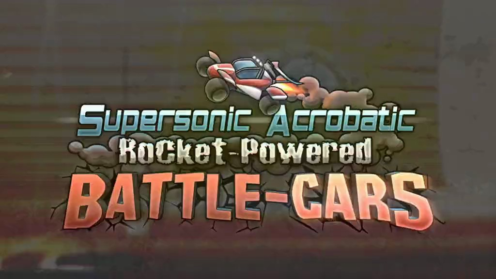

Soccer but with...cars?
This is bascially what the video game Rocket League is all about.
Rocket League is a game with rocket-powered vehicles, which provides a creative combination of car racing and
real-world soccer. Developed by Psyonix Studios, the game was created on July 7, 2015 as a sequel game to Psyonix's
Supersonic Acrobatic Rocket-Powered Battle-Cars (also known as SARPBC). The game had basically the same concept
as modern-day Rocket League, though less advanced, as SARPBC was created on October 9, 2008 for the PS3.

Rocket League loading screen, Psyonix

Supersonic Acrobatic Rocket-Powered Battle-Cars loading screen, Psyonix
On September 23, 2020, Psyonix announced that Rocket League would become free-to-play. This was because
Epic Games bought out Psyonix back in May 1, 2019. Epic decided to take Rocket League and made it free-to-play on
the Epic Games Launcher, which boosted the popularity of Rocket League from 100,000 concurrent players before free-
to-play to over 1 million after free-to-play. This was a huge success for the developers at Epic Games, since it was their plan
to make Rocket League more popular than ever, which worked miraculously, as it increased the player count by over tenfold.
Rocket League sites
| Instagram || | X (Twitter) |
|---|---|
| YouTube || | RL Wiki |